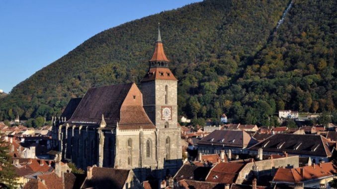
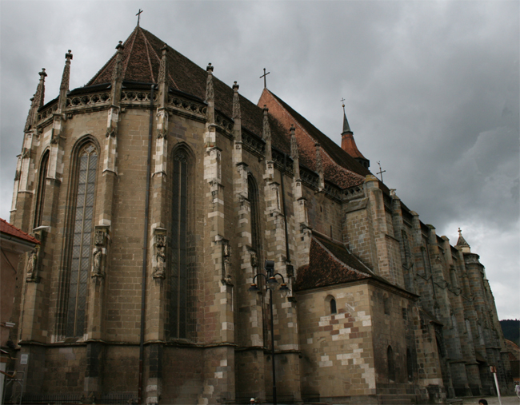
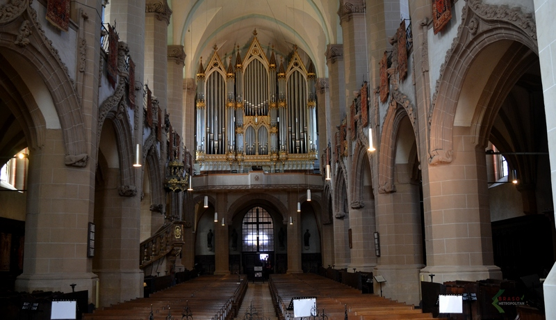
BISERICA NEAGRĂ
Biserica Neagră este biserica parohială a comunității evanghelice luterane din Brașov, situată în centrul municipiului Brașov. Clădirea gotică a fost parțial avariată în incendiul din 1689, când zidurile ei s-au înnegrit și a primit numele actual. Denumirea populară de după incendiu, „Biserica Neagră”, a fost acceptată oficial în secolul al XIX-lea. Aceasta se înalță pe locul unei biserici romanice mai vechi din secolul al XIII-lea, distrusă în marea invazie tătară din 1241. Biserica Neagră este cel mai mare edificiu de cult în stil gotic din sud-estul Europei, măsurând 89 de metri lungime și 38 de metri lățime. În această biserică încap circa 5.000 de persoane. Este o biserică de tip hală în stil gotic târziu, fiind formată din cor, naos și turn. Din lungimea totală a construcției, 31 m sunt reprezentați de cor, 42 m de naos și 16 m de baza turnului.
Biserica Neagră este celebră nu doar prin dimensiunile sale ci și prin alte lucruri: astfel, în clopotniță se află un clopot din bronz care cântărește 6 tone. Este al treilea ca mărime din spațiul românesc.[3] Corul susținut de contraforți exteriori decorați cu edicole care adăpostesc statui de sfinți constituie unul din puținele exemple de acest tip din Transilvania.
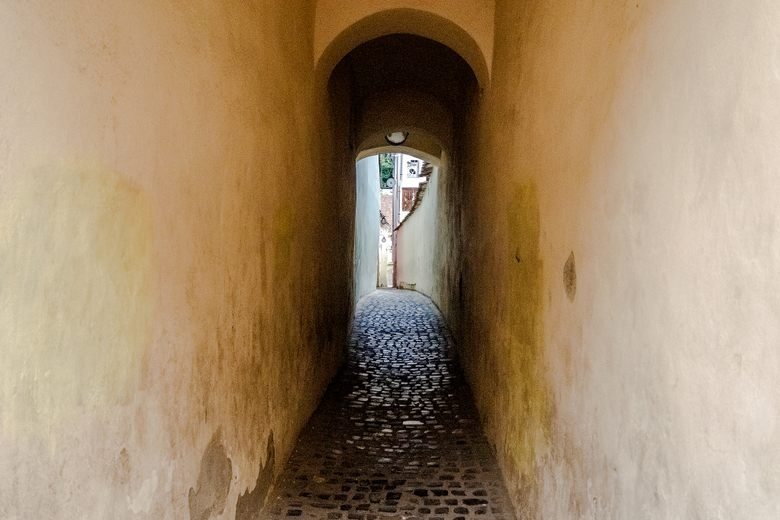
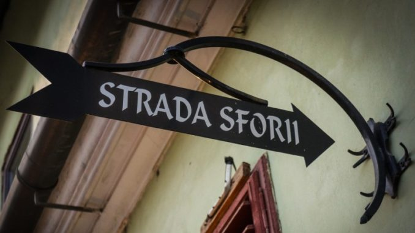
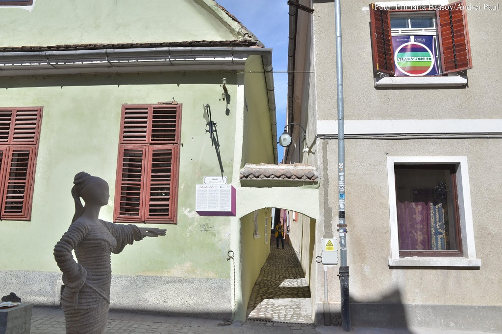
STRADA SFORII
Având în vedere faptul că strada este situată în apropiere de Piața Sfatului și Biserica Neagră, un monument gotic important, Strada Sforii a ajuns în zilele noastre o atracție populară pentru turiștii care ajung aici.
Strada Sforii are o lungime de 80 de metri, iar lățimea sa variază de la 111 la 135 centimetri. Așadar, Strada Sforii este a treia cea mai îngustă stradă din Europa, după Spreuerhofstraße din Reutlingen, Germania (recunoscută de Cartea Recordurilor Guinness drept cea mai îngustă stradă din lume), și Strada Parlamentului din Exeter, Anglia.
Legenda spune că în perioada medievală, cuplurile se ascundeau aici să se sărute în intimitate, dar și tinerii îndrăgostiți ai căror părinți nu erau de acord cu relația lor. Legenda care a durat ani de zile mai spune că tinerii îndrăgostiți care se sărută pe strada Sforii vor rămâne pentru totdeauna împreună. Desigur, Brașovul are nenumărate alte străzi care captează vibrația orașului.
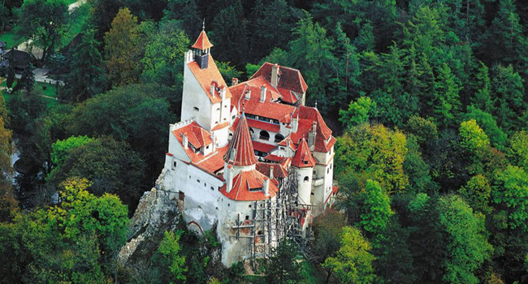
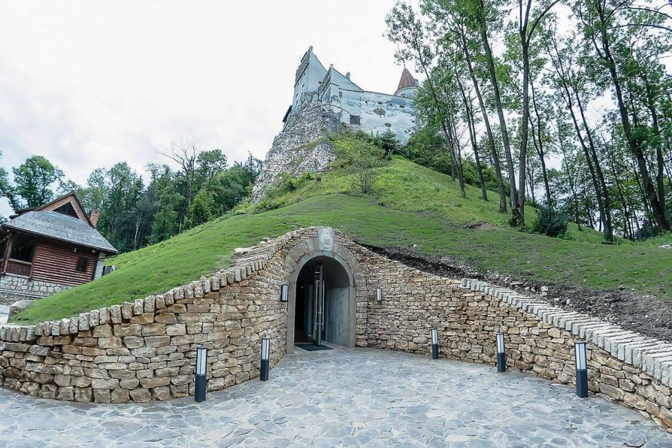
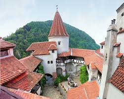
CASTELUL BRAN
Castelul Bran se situează la mai puțin de 30 km de Brașov, pe șoseaua ce pornește din vechiul cartier Bartolomeu și leagă Brașovul de Câmpulung. Castelul Bran este construit pe o stâncă, într-un punct cheie din punct de vedere strategic.
În 19 noiembrie 1377, cancelaria regelui maghiar Ludovic cel Mare – Ludovic I de Anjou – emite, la Zvolen (acum în Slovacia Centrală) un act prin care acordă locuitorilor Brașovului privilegiul construirii unui castel. Documentul îi îndeamnă pe sașii (de la termenul Sachsen – populație de origine germană venită în Transilvania în secolul al XII-lea) din întreaga regiune a Brașovului să participe la construcția castelului Bran, inițial denumit Dietrichstein sau Törzburg în limba germană, Törcsvár în maghiară și Turciu în română. Locul ales pentru construcţie era situat pe o stâncă abruptă dintre Măgura şi Dealul Cetăţii, ce dispunea de o vedere excepţională spre dealurile învecinate, spre Valea Moeciu şi Ţara Bârsei.
Construcţie impunătoare şi rece, Castelul Bran este poziţionat strategic pe o stâncă în mijlocul pădurii, şi aminteşte de sălaşul contelui Dracula, aşa cum l-a zugrăvit vizual regizorul Francis Ford Coppola în celebra ecranizare din anul 1992, Bram Stoker’s Dracula.
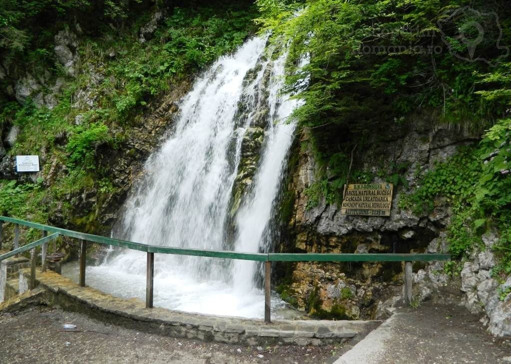
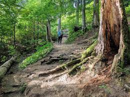
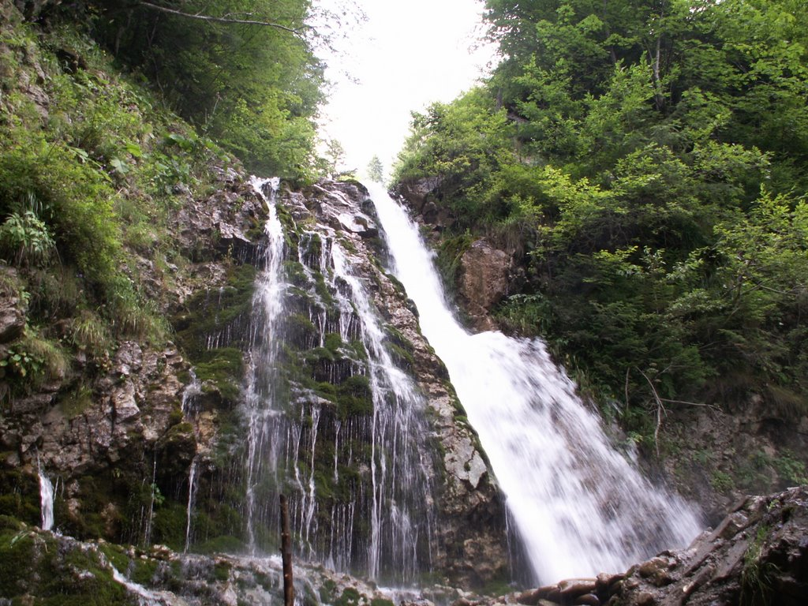
CASCADA URLĂTOAREA
Cascada Urlătoarea este o cascadă formată de pârâul Urlătoarea, în apropierea orașului Bușteni, România, aflată la altitudinea de 1100m, în apropierea traseului turistic care duce din Bușteni spre Platoul Bucegi pe Valea Jepilor. Se poate ajunge și din localitatea Poiana Țapului.
Traseul către Cascada Urlătoarea este unul foarte ușor și este bine marcat, cu un punct roșu. Poteca te duce negreșit de-a lungul pârâului Urlătoarea. Traseul pornește din Bușteni, de lângă stația de telecabină. Are un urcuș mai abrupt la început, dar apoi poteca urcă pe munte mai lin. Se pleacă de la 885 m altitudine și se ajunge la Cascada Urlătoarea, la 1055 m altitudine, după aproximativ o oră de mers în pas lejer.
Legenda vorbește despre doi frați care s-au îndrăgostit de aceeași fată. Tinerii erau amândoi ciobani și au prins drag de o fată care urca și ea des pe munte cu mioarele ei. Niciunul nu știa despre celălalt că s-a îndrăgostit de aceeași fată, dar amândoi o urmăreau. Iar, într-o zi cețoasă, cei doi au găsit-o pe fată odihnindu-se pe niște stânci și amândoi s-au repezit către ea să o ia în brațe. Înspăimântată, fata s-a aruncat în gol de pe stânci și lacrimile ei s-au transformat în cascadă. Flăcăii au rămas împietriți de durere și azi li se mai văd trupurile gârbovite de o parte și de alta a cascadei.
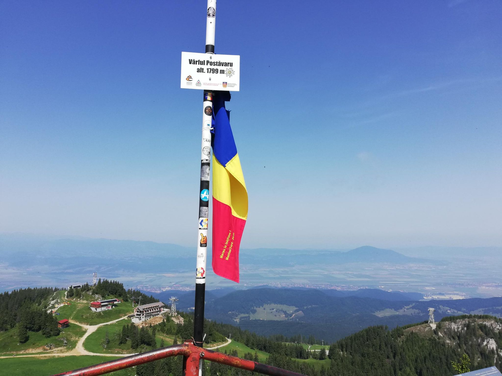
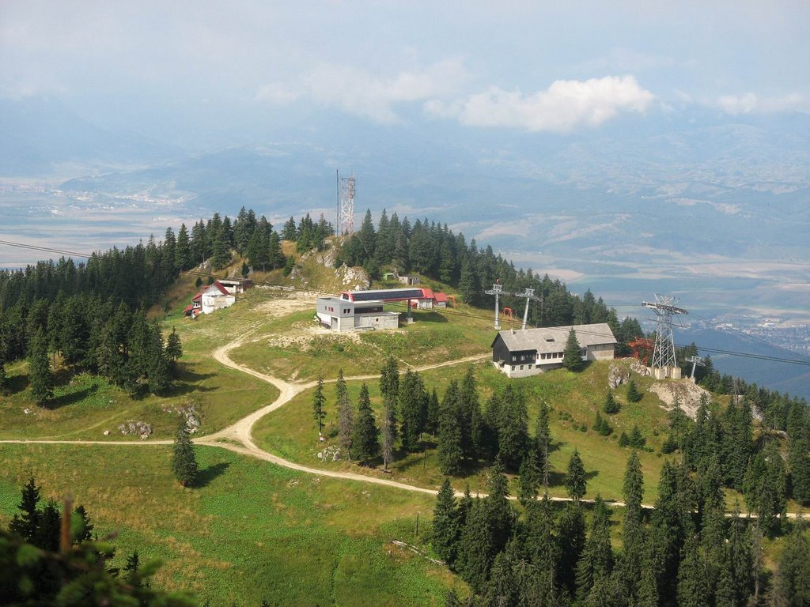
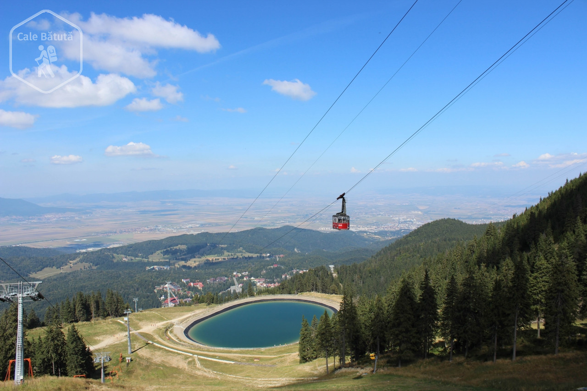
VĂRFUL POSTĂVARUL
Munții Postăvarul sunt o grupă muntoasă a Carpaților de Curbură, aparținând de lanțul muntos al Carpaților Orientali. Cel mai înalt pisc este vârful cu aceeași denumire, Vârful Postăvarul, având 1799 m. Numele masivului provine de la fostul proprietar de oi – Stoica Postăvaru din cartierul Schei, Brașov.
Vârful Postăvaru este cel mai înalt vârf din Masivul Postăvaru, având o înălțime de 1799 m. În unele hărți este marcat ca având înălțimea de 1800 m, iar pe altele 1804 m.
Se poate ajunge pe vârf pe mai multe trasee marcate, pornind ori din Poiana Brașov ori din Timișul de Jos. Cel mai folosit traseu de urcat spre Vârful Postăvaru este totuși "Drumul roșu". Pe vârf se deschide o panoramă atât spre est, spre Munții Ciucaș, Masivul Piatra Mare, Munții Baiului, cât și spre vest, spre Munții Piatra Craiului, Munții Făgăraș, Munții Perșani și Măgura Codlei, și spre sud, spre Munții Bucegi.